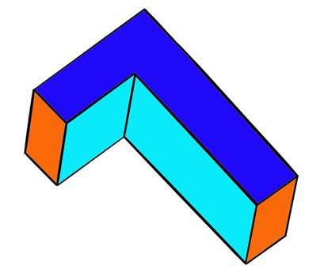
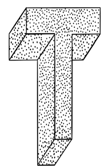

Decoration
Decoration is to make something look more attractive by adding materials to it or around it.
The materials used to decorate include grain, paint, sand, leaves and flowers.
Observe the shapes and answer the questions that follow:
A

B
